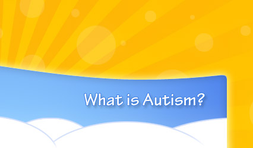

According to Autism Canada there is 1 child in every 165 who is diagnosed with Autism Spectrum Disorder (ASD). Autism is a severe disruption of the normal development process and is often diagnosed within the first few years of life. Autism is viewed as a spectrum or a continuum of disorders, with varying degrees of severity and levels of functioning. The term Autism Spectrum Disorders (ASD) is frequently used interchangeably with autism. Diagnoses such as Asperger’s Syndrome, Childhood Disintegrative Disorder, Pervasive Developmental Disorder, Autistic Disorder and Pervasive Developmental Disorders (Not Otherwise Specified) are all included within the umbrella of ASD.
Symptoms
While the symptoms of autism vary from child to child, the core areas affected include:
- Deficits in language and communication
- Impairments in socialization and social interactions
- Undeveloped cognitive and adaptive functioning
- Restricted repetitive and stereotyped patterns of behavior and interests
These essential skill deficits cause children to fall progressively further behind their typical peers as they grow older. The cause is unknown, but evidence points to physiological and neurological abnormalities. Children with autism generally do not learn in the same way that children normally learn, because, in part, they lack the fundamental skills which enable them to acquire and process basic information. These difficulties result in significant delays in their development of language, play and social skills, including their failure to notice and learn through imitation of their peers.